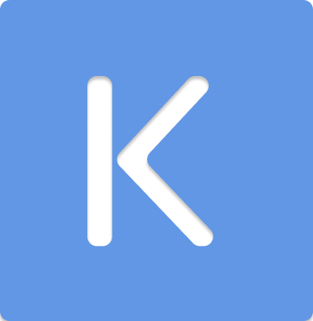

Kevin Orrego Martinez
Sobre mi
Hola Me llamo Kevin Andrés Orrego Martínez, actualmente tengo 21 años, soy programador desde hace 3 años, siempre me han gustado los videojuegos, y desde hace un año que estoy desarrollando uno aunque siempre lo paro por que no me gusta el resultado xd.
Los videojuego son el hobbie al cual le e dedicado mas horas ya que me permiten olvidarme de mi entorno y sumergirme de lleno en una historia completamente diferente